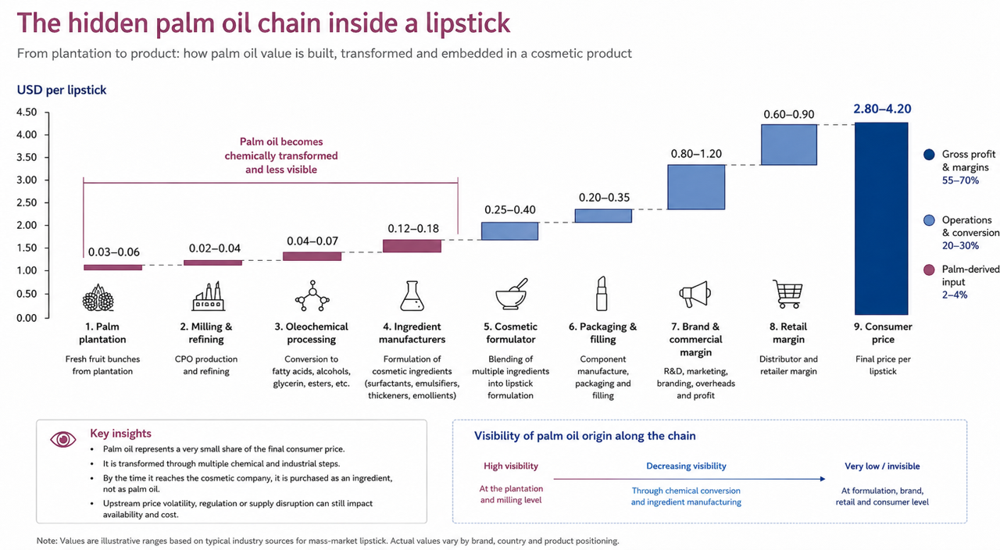

A lipstick tube seems far removed from maritime tensions near Iran. Look beyond the label, however, and the distance begins to collapse. The ingredients inside that lipstick connect cosmetics companies to palm plantations in Southeast Asia, fertilizer and natural gas markets, biodiesel policy, and one of the world’s most consequential maritime chokepoints.
This connection exposes a weakness in how many companies assess geopolitical risk. Executives tend to map where their direct suppliers and factories are located. That view can miss the common resources and infrastructure buried several tiers beneath them. A disruption does not need to stop a cosmetics factory to alter its economics.
The Strait of Hormuz handles roughly one-fifth of globally traded oil. When military tensions intensified in the region in early 2026, shipping conditions deteriorated and energy markets quickly repriced the risk. The immediate concern was oil, but the effects moved well beyond petroleum companies and firms operating in the Middle East.
Palm oil illustrates how this transmission occurs. It is produced primarily in Indonesia and Malaysia and is widely associated with food. Its derivatives are also embedded in cosmetics and personal-care products. Glyceryl stearate, cetyl alcohol, and palmitic acid can all trace back to palm oil through different stages of chemical processing. Move farther upstream and those separate ingredient chains converge: palm oil depends on oil-palm plantations, plantations depend on fertilizer, and fertilizer production depends heavily on natural gas.
To a cosmetics buyer, these may appear to be distinct purchases from distinct suppliers. Economically, they may share the same underlying vulnerability.

The dependency became visible in 2026. Higher oil prices made palm-based biodiesel more attractive. Indonesia’s increasing use of palm oil for biodiesel directed more supply toward the energy sector, while concerns about future availability intensified competition among industries. A buyer analysis included in the accompanying industry material shows crude palm oil prices rising approximately 18 percent between January and March 2026.
The sequence matters. Instability near Iran affected oil markets. Higher oil prices changed biodiesel economics. Biodiesel demand placed additional pressure on palm oil. That pressure then reached manufacturers using palm-derived ingredients in products such as lipstick, moisturizers, foundations, shampoos, and soaps.
Cosmetics and healthcare account for less than 5 percent of global palm oil consumption. Their relatively small share does not protect them. These industries compete for the same commodity with much larger food and energy markets. They are price takers in a contest shaped by forces far outside the beauty sector.
At the product level, palm-derived inputs may represent only about 2 to 4 percent of a lipstick’s consumer price. That small percentage can encourage managers to dismiss the exposure as immaterial. Scale changes the calculation. An illustrative estimate in the buyer analysis suggests that an unexpected 18 percent increase could add approximately €500,000 to €800,000 in costs for a company with $1 billion in revenue, although the document does not disclose the assumptions behind that range. The figure should therefore be read as an indication of possible magnitude, not a universal forecast.
The larger managerial problem is aggregation. A single palm-derived ingredient may look insignificant. Several ingredients may depend on the same feedstock, and many products across a company’s portfolio may contain those ingredients. What appears diversified at the supplier level can remain concentrated at the raw-material level.
This changes the questions procurement and supply-chain leaders should ask. Do multiple ingredients ultimately depend on the same raw material? Which product lines have the greatest cumulative exposure? Are alternative feedstocks technically and commercially viable? How quickly could formulations be changed if prices rose sharply or supply tightened? A supplier list alone cannot answer these questions.
Conventional risk maps focus on direct relationships: who supplies the company, where production occurs, which transportation lanes are used, and how much inventory is available. Those measures remain essential, but they do not reveal shared exposure to energy systems, commodity substitution, industrial policy, or infrastructure several tiers upstream. A company can diversify suppliers and still depend on the same plantation base, fertilizer market, shipping corridor, digital network, or energy source.
The lipstick example is a warning against confusing geographic distance with economic insulation. The Strait of Hormuz is closer to a cosmetics portfolio than it appears because risk travels through connected markets, not only through visible supplier relationships. Companies that map only what they buy directly will continue to be surprised by vulnerabilities already embedded in their products.
Source note: Market information and buyer estimates referenced here are drawn from the supplied cosmetics-industry analysis, including Fastmarkets’ crude palm oil assessment for September 2025 through June 2026. The company-level estimate is illustrative and should be interpreted in light of firm-specific formulations, purchasing volumes, contracts, and hedging arrangements.
← Back to the Observatory